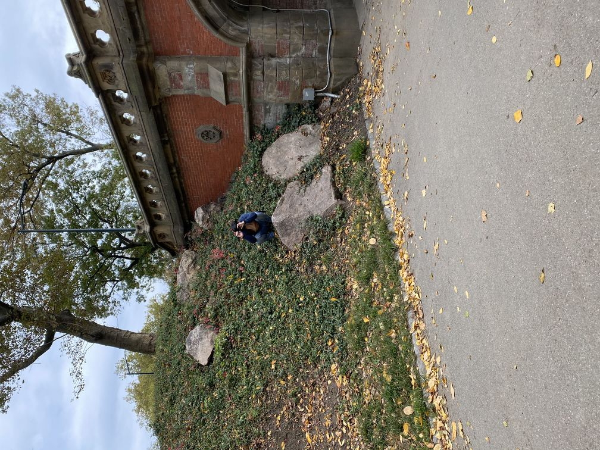

Hi I'm Chris! I'm 21 and a junior at Lehman College majoring in Computer Science. Born in the Bronx, raised in
the Philippines, I came back to NYC looking for opportunities to succeed academically and professionally.
I enjoy problem solving and video games, so getting into Computer Science felt very natural. My current academic
interests are in Data Science and Web Development. Professionally, I plan to sample what the field of Computer Science
has to offer before I pursue a specialty. Outside of my academic and professional interests, I like to draw, edit videos,
and read.
If you would like to connect with me, you can find links to my LinkedIn and GitHub.
If you want to know me more and chat non-computer science stuff, I'm also on Instagram and Discord.
